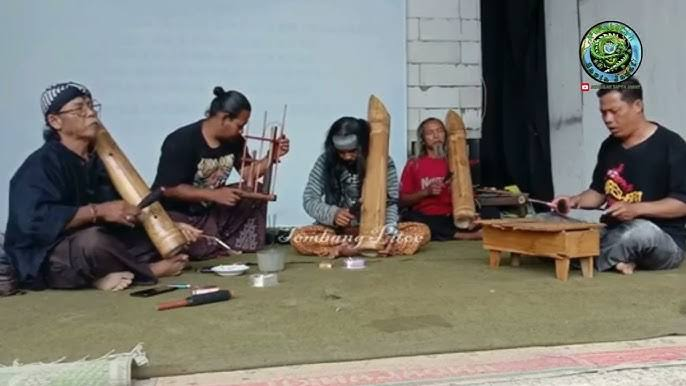
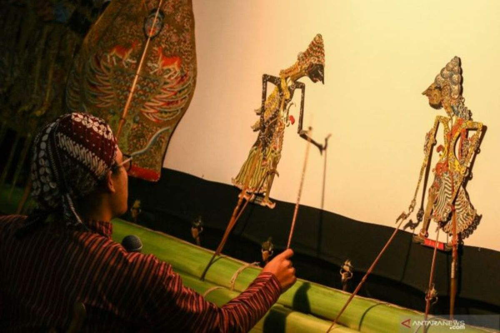
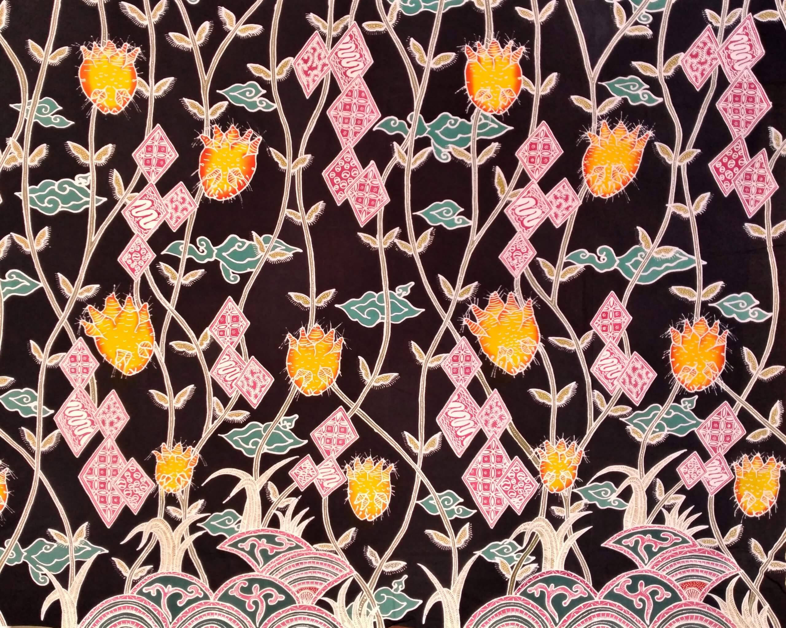
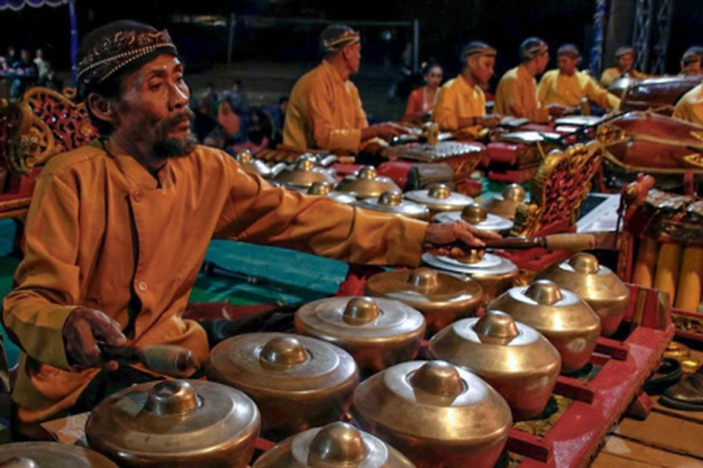

Magetan bukan sekadar kota kecil di Jawa Timur. Di balik keindahan alamnya, wilayah ini menyimpan kekayaan budaya yang luar biasa! Dari ritual sakral, seni pertunjukan yang memukau, hingga kerajinan khas yang mendunia, Magetan punya segalanya! Yuk, kita jelajahi budaya unik yang bikin Magetan semakin istimewa!
1. Labuh Sesaji di Telaga Sarangan
Ritual Syukur di Negeri di Atas Awan!
Bayangkan sebuah prosesi penuh warna dengan sesaji yang dilarung ke Telaga Sarangan. Inilah Labuh Sesaji, sebuah tradisi yang dilakukan setiap tahun sebagai wujud syukur kepada Tuhan atas hasil panen dan kehidupan yang harmonis.
- Arak-arakan warga membawa sesaji yang dihiasi indah
- Pertunjukan seni dan gamelan mengiringi prosesi
- Ditutup dengan doa dan harapan untuk kesejahteraan Magetan
Pemandangan yang magis, bukan? Apalagi dengan latar belakang telaga yang berkabut, bikin suasana jadi makin mistis dan sakral!
2. Musik Thongling (Kentongan Seruling)
Harmoni Magetan!
Di Dusun Wonomulyo, ada musik unik yang nggak bakal kamu temukan di tempat lain---namanya Thongling, kombinasi kentongan & seruling yang menghasilkan melodi khas! Suaranya bikin hati adem dan cocok dimainkan saat acara adat maupun santai di sore hari.
- Unik! Musik ini diwariskan turun-temurun
- Relaks! Nada-nadanya bikin pikiran tenang
- Eksklusif! Hanya ada di Magetan!

3. Wayang Cangkem
Wayang Tanpa Musik, Penuh Humor!
Pernah dengar Wayang Cangkem? Ini adalah inovasi wayang khas Magetan yang tidak menggunakan gamelan, tapi fokus pada cerita dan dialog yang super kocak! Dalang memainkan karakter dengan suara dan ekspresi yang bikin penonton terpingkal-pingkal!
- Lebih ringan dan menghibur
- Sarat dengan cerita rakyat Magetan
- Dialognya bisa spontan dan interaktif!

4. Batik Pring Sedapur
Batik Bambu yang Mendunia!
Siapa sangka kalau Magetan punya batik khas dengan motif bambu? Batik Pring Sedapur adalah kebanggaan Magetan, dengan motif bambu yang melambangkan ketahanan, kebersamaan, dan kesejahteraan.
- Motifnya klasik, tapi tetap elegan
- Mengandung filosofi kehidupan yang harmonis
- Diminati oleh kolektor batik hingga mancanegara!
Batik ini sering digunakan dalam acara resmi dan juga oleh pejabat daerah---keren banget, kan?

5. Desa Kauman
Pusat Pembuatan Gamelan yang Mendunia!
Kalau kamu suka musik tradisional, wajib mampir ke Desa Kauman! Di sini, para pengrajin gamelan mempertahankan teknik kuno dalam membuat alat musik khas Jawa yang tidak hanya digunakan di Indonesia, tapi juga diekspor ke berbagai negara!
- Setiap gamelan dibuat dengan teknik tradisional
- Sudah ada sejak zaman kerajaan!
- Digunakan dalam banyak pertunjukan wayang & tari

Magetan: Negeri Penuh Warisan Budaya
Ayo, jangan cuma baca datang dan rasakan sendiri keajaiban budaya Magetan!